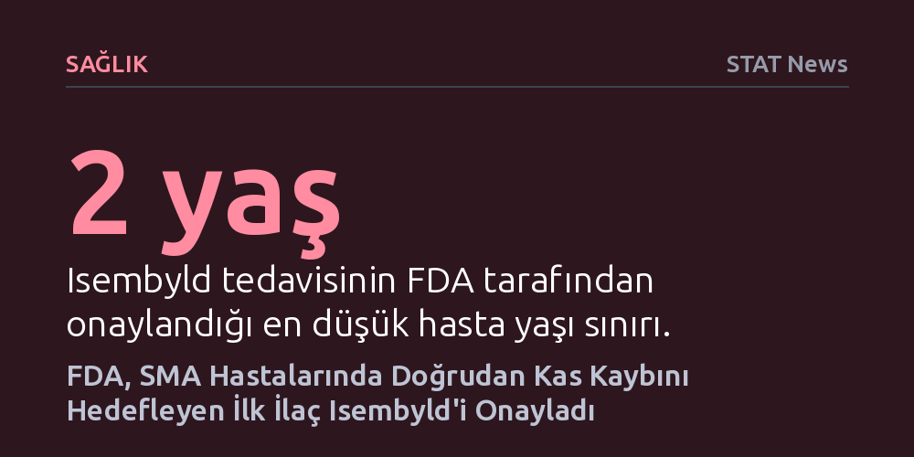

SAGLIK · STAT News · 2026-09-12
FDA, spinal müsküler atrofi tedavisinde nöronlar yerine doğrudan kas kaybını hedefleyen ilk ilaç olan Isembyld'e onay verdi. Klinik çalışma, ilacın mevcut gen tedavileriyle birlikte kullanıldığında bir yıl içinde motor becerileri anlamlı şekilde iyileştirdiğini gösterdi.
SMA tedavisinde bugüne kadar yalnızca motor nöronları korumaya odaklanan yaklaşım, artık doğrudan kas kütlesini ve fonksiyonunu güçlendiren tamamlayıcı bir terapiye kavuştu.

Amerikan Gıda ve İlaç Dairesi (FDA), spinal müsküler atrofi (SMA) hastalarında görülen kas kaybını doğrudan hedefleyen ilk tedavi olan Isembyld adlı ilaca onay verdi. Biyoteknoloji şirketi Scholar Rock tarafından geliştirilen bu tedavi, nadir görülen nörolojik bir hastalıkla mücadele eden hastaların bağımsız hareket edebilme ve yürüme potansiyelini artırmayı amaçlıyor.
Bugüne kadar geliştirilen standart SMA tedavileri, hareket kontrolünü sağlayan motor sinir hücrelerinin hayatta kalmasına odaklanıyordu. Isembyld ise yalnızca nöron düzeyindeki tahribatı yavaşlatmakla kalmayıp doğrudan zayıflayan iskelet kaslarını koruyup güçlendirmeyi amaçlayan ilk onaylı terapi unvanını elde etti.
FDA'nın onay kararı, iki yaş ve üzerindeki çocuk ve yetişkin hastaları kapsıyor. Ancak Isembyld tek başına bir tedavi olarak değil; hareketi kontrol eden nöronlar için hayati öneme sahip SMN2 genini hedefleyen mevcut SMA ilaçlarını halihazırda kullanmakta olan hastalar için tamamlayıcı bir terapi olarak uygulanacak.
İlacın etkinliğini ortaya koyan son aşama klinik denemesinde umut verici veriler elde edildi. Mevcut SMN2 hedefli tedavilerinin yanına Isembyld eklenen genç hastaların motor becerilerinde bir yıllık sürecin sonunda belirgin bir iyileşme kaydedilirken, plasebo grubundaki hastaların motor fonksiyonlarında gerileme gözlendi ve iki grup arasındaki fark istatistiksel olarak anlamlı bulundu.
SMA hastaları için en büyük zorluklardan biri, nöronları koruyan mevcut tedavilere rağmen kas kütlesi kaybının ve fiziksel güçsüzlüğün tam anlamıyla telafi edilememesiydi. Kas dokusunu doğrudan güçlendiren bu yeni ilacın tedavi protokolüne eklenmesi, özellikle genç yaştaki hastaların günlük yaşamda bağımsız hareket edebilme şansını somut biçimde artırıyor.
Bu onay aynı zamanda karmaşık genetik ve nöromüsküler hastalıklarda çoklu hedef stratejisinin önemini kanıtlıyor. Hem sinir hücrelerini koruyan gen temelli yaklaşımların hem de kas dokusunu hedefleyen tedavilerin birlikte yürütülmesi, SMA tedavisinde yeni bir standart oluşturabilir.